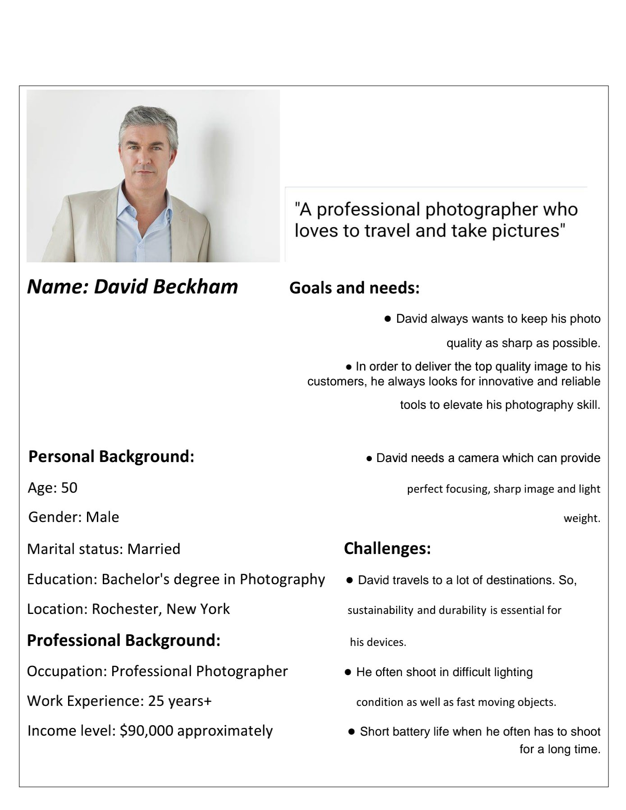

<!DOCTYPE html>
<html>

<head>
  <title>CIS*1250 Template</title>
  <meta name="google" content="notranslate">
</head>

<body>
  <h1>Writing Assignment 1</h1>
  <p>● Software development process is the process of creating a computer 
software product. There are few steps of software development. Those 
are: 1. Planning, 2. Implementation, 3. Testing and 4. Deployment and 
Maintenance.
Planning: Requirement gathering is one of the most important parts in 
planning. Once the general requirements are gathered from the client, 
an analysis of the scope of the development should be determined and 
clearly stated. Planning is the first step of this process.
Implementation: Usually, Software Engineers write code in this step.
Testing: Testing is the process in which we can ensure that if the 
software is ready to run or not . We can identify problems through this 
process. If we find any problem in this step then we can fix it and go to 
the next step. Otherwise, we can just move forward after ensuring that 
everything is ok.
Deployment and Maintenance: After testing successfully, getting 
approval for release, sold the software on market, the deployment 
starts. Only releasing a software is not the end of this process. It needs 
continuous update to cope up with the present world.
</p>
  <p> ● In my view, design is one of the most significant things before 
doing something actually. For example : Architecture Engineers 
make plan / design for the building and according to that plan /
design Civil Engineers fabricate the building on field. In the 
Software Engineering field, we are both Architecture and Civil 
Engineers of Software. In order to elevate our success rate 
,design is an eminent part of our process. Without making any 
design for software ,if we start working on it then there is a higher 
chance to fail in that project .So, the software design is so 
important in the field of Software Engineering.</p>

  <p> ● Facebook is one of the applications that I personally use and 
think that it is well designed. Because, the interface of this app is 
so captivating. Moreover, it is a great way to get connected with 
people all around the world. When someone enter into the app 
,most of the important things are present in the front page .So, it 
becomes convenient for users to use this app. This application 
wasn’t like this when it got released. Day by day, with
improvisation it’s becoming better and better.</p>
  
  <h1>Writing Assignment 2</h1>
  
  <p>Answer to the Question Number 1:</p>
  <p>Require gathering means collecting a set of operations that the 
software must perform. The best way to do it is by communicating 
with clients. This is the most significant part of this process. We 
should ask the client questions using “What “or that type of 
questions which provide substantial information rather than only 
yes/no. Without asking questions we won’t be able to clear about 
what they want us to build. So, it’s better to ask them all possible 
questions in spite of assuming things by our own. Asking 
questions and converting their answer as requirement is also one 
of the important tasks in this process. Moreover, observation is 
also a way to gather requirements. We can send any person to 
client’s territory to observe that what server they are using and
what they actually need on their software.</p>
  <p>In the software development process, requirement gathering is 
really essential because without this we won’t be able to 
understand that what we have to do on our software product and 
how to mitigate the needs of client’s. Without the requirement 
gathering step there is a high chance to make mess in the 
process and being unable to satisfy the clients.
</p>
  
  <p>Answer to the Question Number 2:</p>

  <p>The software product I talked about in writing assignment 1 
was Facebook. Now, I’m going to write 5 user stories for that 
software below:</p>
  
  <p>1. As a user, I want to see dislike button on Facebook so that 
I can manifest my honest reaction to anyone’s post.
2. As a user, I want to upload picture without losing its 
quality so that I can present the picture as I want.
3. As a user I want Facebook to stop gathering my 
information from other platforms and suggesting things 
using that information so that my privacy keep secure.
4. As a user I want to reach my post to everyone without 
paid boosting so that people from all around the world can 
see it.
5. As a user I want Facebook to consume less mobile date so 
that everybody can access it effortlessly.
</p>

  <h1>Writing Assignment 3</h1>

  <p>● Emotion, Culture & Context are three basic elements of empathy. 
Emotion symbolizes understanding the customers the way we 
understand ourselves. Culture symbolizes the area where the product 
will be delivered. Taking these contextual and cultural aspects into 
accounts. Context symbolizes issues customers face and mitigate those 
by re-designing the products.
</p>
  <p>● Sheep: In this business model people don’t get proper attention. 
People are treated like a sheep. Companies simply wanted to create 
and control consumer demand. This worked for a while, but it has 
become less and less effective over time. One of the problems is 
disrespectful of the people organizations are ostensibly trying to serve.
Homo Economicus: A distinct advantage of this model of people is 
that it tends to move organizations beyond a focus on messaging 
toward the actual aspects or features of products and services. In short, 
these businesses focus on quantity over quality.
The “Human Factor”: People are primarily goal-driven and taskoriented. People become more like robot than human here.</p>
  <p>● Sheep: This business model lacks “Emotion” of empathy because this 
model do not really think about their customers. They kind of neglect them 
but understanding customers is the significant part of emotion. Customers 
are more like ourselves.
Homo Economicus: This model lacks “Culture” of empathy because this 
model mainly focus on quantity more than quality. Culture includes 
internationalization and market demands where product will get more value 
which is missing in it.
The “Human Factor”: People are so task oriented in this model that they 
become like robot and lacks “Context”. It is really important to understand 
the needs and what change is required to develop the products from the 
user experience.</p>
  
  <h1>Writing Assignment 4</h1>

  <p>● “The Kodak Camera”, It is a magazine camera which can take 100 
picture without any loading. After the 100 pictures have been taken, 
the strip of film (which is wound on a spool) may be removed, and sent 
by mail to the factory to have the pictures finished. The system of 
capturing picture is just point the camera and press the button, which is 
moved into position just by turning the key. George Eastman
developed this camera. His slogan about this camera was “You press 
the button; we do the rest”. Eastman changed the game by putting his 
product into a larger system, one where customers sent in their film 
not only to get their photos processed and printed, but also to get new 
film loaded onto their old rolls.</p>

  <p>● A persona for a user of “The Kodak Camera” is given on the next 
page:</p>
  <p>(The picture used on the persona is downloaded from the internet randomly. I add this to make 
the persona livelier and captivating)
</p>
  
  

 <h1>Writing Assignment 5</h1>

  <p>● In software design, prototyping is like making a dummy design or a 
toy design of any software product before making the final design of it. 
The main goal of prototyping is to take feedback from the customers.
If the customer is satisfied with the prototype only then it moves to the 
next step of design. Otherwise, developers again refine it and show it 
to customers.</p>
  
  <p>● There are many reasons to use prototyping in the development 
process. Prototype is the rough design of any product. It may be 
wrong but It can be changed during the design process. Customers 
are always involved in this process. So, they feel like they are the codesigners of the product. Because of getting continuous feedback 
from the customers, it becomes convenient for the developer to 
develop the product meticulously.
</p>
  
  <p>● Key benefits of using prototypes in software development:</p>
  
  <p>Fast to develop: Developers can identify the errors at the early stage
of their design. So, it saves their plenty of times.</p>
  
  <p>Low Cost: It becomes costly for the developers if they find any 
mistakes after completing the final design of the product and then they 
have to fix it. In this case, prototyping helps to diminish the cost by 
identifying the problem at the primary stage.
</p>
  
  <p>Act as communication tool: Prototyping enables the communication
between developer and customer. So, it gives developers the privilege
of evaluating their primary design repeatedly from the customer.
</p>
  
  <p>● To create paper prototyping, developers/someone needs some 
basic elements. For example: Paper, pencil, eraser, sharpener, 
scissors, tape, glue sticks, cardboard, highlighter etc. All these stuffs 
are so cheap and available. Then developer will brainstorm their idea 
about design according to the requirements and depict it on paper. 
Next, customer will give feedback to it.</p>

  <h1>Writing Assignment 6</h1>

  <p>● Software design or Software Engineering is not all about writing 
code or making design documents in isolation. In order to deliver 
successful product to the consumers, it is really significant to 
understand their needs and work according to that. Communication is 
the most effective tool to do that.
</p>
  
  <p>● In the development process, people always work in group rather
than working alone. During that time, communication helps to reduce
conflict in team. Moreover, good communication always brings good 
product. It helps developers to understand the needs of customer well. 
Although, it helps to assure the product quality and fulfilling client 
satisfaction. Overall, communication is undoubtedly a prolific practice 
in development process.</p>
  
  <p>● Three key elements of effective communication is written below:
</p>
  
  <p> Listening Carefully: People conventionally think that, Speaking is the 
most important part of any communication but in order to make the 
communication fruitful, listener should be listen carefully and should 
not interrupt the speaker before they end.</p>
  
  <p> Acknowledging mistake: It is very normal to make mistakes while 
communicating but the best option is as soon as anyone 
understand their mistake, they should acknowledge it and try to 
mitigate it.
</p>
  
  <p> Being honest: It is important to express anything honestly during 
communication what someone want to express rather than hiding 
it from others but it doesn’t mean saying anything mean to 
others.</p>
  
  <p>● As I’m an International student, when I first moved in Canada, I used 
to struggle about some issues while communicating. For example: 
where to use formal language, where to speak casually. Moreover, I
was also confused about non-verbal cues like: gesture, eye contact, 
body language. In class, we learned about being culturally sensitive. I 
think, if I knew about it before then I could have handled it better.
</p>   

  <h1>Writing Assignment 7</h1>
  
  <p>● For this assignment, I want to work on “Accessibility” which is one 
of the design principles.</p>
  
  <p>● “Accessibility” asserts that something which everyone can access or 
use so easily. In software design, it is so significant because software 
products are made for consumers. If majority of them can’t access the 
product, then what makes the product special? Even people with any 
physical disabilities or with zero prior knowledge about the product
should have to able to use the product without any difficulties. Then 
the software will be able to open its market to the broader audience.
So, accessibility plays a vital role to make any software design.
Developers should consider this issue while designing to make it 
successful.</p>
  
  <p>● Two examples of where I noticed or encountered this principle:</p>
  
  <p>1. At airport, I noticed several times that people who never used a 
kiosk before they often suffer from operating this. The interface
should be simple which provide only relevant information and 
zero complexity so that everyone can access it readily.</p>
  
  <p>2. Once I encountered that the buttons of an elevator were higher 
than the usual height that someone was suffering to reach and 
press it. Then I realized that developers should consider about 
all kinds of users while designing it to make it convenient for 
everyone.
</p>

  <p>● Developers should always keep in mind about “accessibility” while 
designing any product and complete their design according to that. 
When a user will identify that they can do any of their tasks
seamlessly then automatically their experience will be good at it. On
the other side, if user find difficult to use the product then it is simple 
that their experience won’t be satisfying with this. So, developers or 
designers should pay attention to “accessibility” to elevate the user 
experience.</p>

  <h1>Writing Assignment 8</h1

   <p>Deceptive dark pattern is a user interface that has been carefully crafted to trick 
users into doing things. Dark patterns are unethical and can be illegal. There are 
many types of deceptive patters. One such pattern is the "Hidden Costs"
pattern, where essential information regarding the product, such as features and 
prices, is obscured or presented in a complex manner, making it challenging for 
users to make informed decisions. We will demonstrate that how this type of 
pattern violates several ethical principles outlined in ACM’s code of ethics.</p>     
  
   <p>● Firstly, it violates “Avoid Harm”. This principle emphasizes that 
professionals should avoid causing unjust negative consequences. The 
"Hidden Costs" pattern may cause users to overpay since it conceals 
important information, which could put them in financial jeopardy or cause 
stress. As a consequence, it breaks this principle.</p>
  
   <p>● Secondly, this pattern breaks the principle "Be honest and trustworthy."
This principle emphasizes how crucial it is to be open and honest about the 
capabilities, constraints, and potential issues of a system. By hiding essential 
information, this pattern demonstrates a lack of honesty, as it withholds pertinent 
information that could affect users' decisions. This lack of transparency diminish
trust between the user and the service provider.</p>
  
   <p>● Finally, this pattern violates the principle "Be fair and take action not to 
discriminate." Fairness and equal participation are promoted by the principle.
Certain user groups those who have inadequate knowledge about digital 
marketing and find it difficult because of the ambiguous information are affected
by this pattern. This pattern can lead to a form of discrimination, as it denies 
these groups fair access to the necessary information to make an informed 
decision.</p>
  
   <p>In summary, “Hidden Costs" violates ethical principles by causing harm, being 
dishonest, and promoting unfairness, as outlined in the ACM's Code of Ethics.
</p>
  
    
</body>

</html>
